Fowl Language Stationery
A pre-launch stationery brand built around bird behavior, ornithological names, language, and irreverent humor. The work spans naming, audience-aware copy, product architecture, and AI-assisted visual development.
Rockin’ Robin: Seven Birds, Seven Colorways, One Remix
A seven-member fictional bird band evolved into a proposed family of coordinated stationery sets—with a customizable special edition inspired by Weird Owl Yankovic.
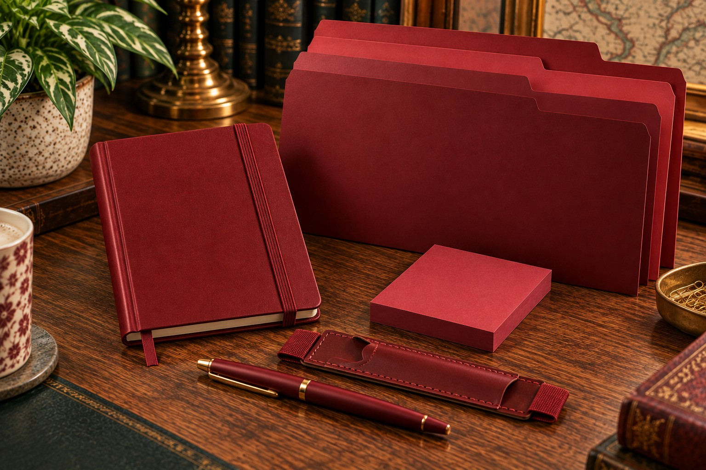
Approved concept mockup · coordinated dark-red assortment
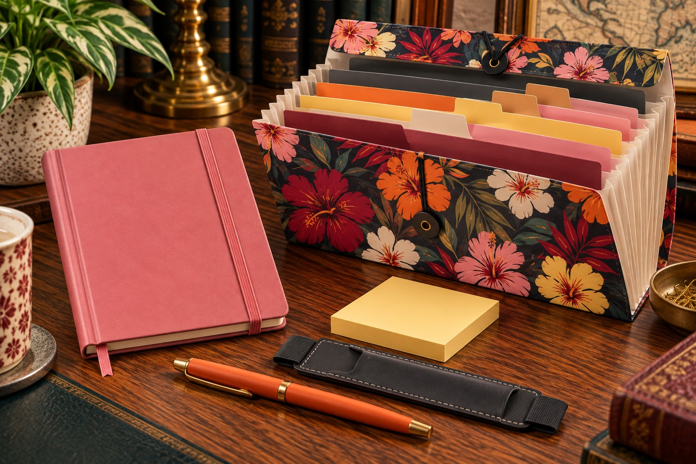
Approved concept mockup · mix-and-match stationery with signature accordion folder
From band members to a repeatable product system
Each of the seven musicians has a designated color. Rather than printing characters on every product, the color becomes the connection to the band. Every standard set has the same five-part assortment: compact journal, coordinating pen, compatible leather pen sleeve, sticky-note pad, and three matching file folders.
Illustrative palette; not finalized manufacturing color specifications.
Weird Owl: a different way to shop the same collection
The special edition is not an eighth monochromatic set. Customers would choose colors independently for the journal, pen, pen sleeve, and sticky-note pad from the seven established palettes. A Hawaiian-print accordion file replaces the three standard folders.
The folder’s exterior combines the seven band colors into one tropical print; its expandable, pleated construction, tabbed dividers, and closure are essential functional specifications. The remaining stationery stays solid-colored. The approved mockup illustrates one possible customer combination, not a fixed assortment.
Creative-direction decisions
Set a consistent component list and color-led product identity.
Identify incorrect pen holders, sticky-note dispensers, duplicate pens, and shifting journal proportions.
Use physical-product references to specify a journal-mounted leather sleeve and functional accordion folder.
Approve representative mockups for the standardized set and customizable remix.
Role: original concept, copy, product-system design, creative direction, review and revision of AI-assisted visuals. These are approved concept mockups, not photographs of manufactured products.
More from the flock
Approved product concepts selected to demonstrate different applications of the brand’s humor, visual identity, and product development.
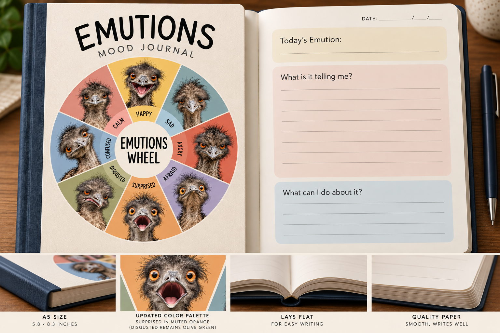
Guided mood-journal concept combining expressive emus and emotional reflection.
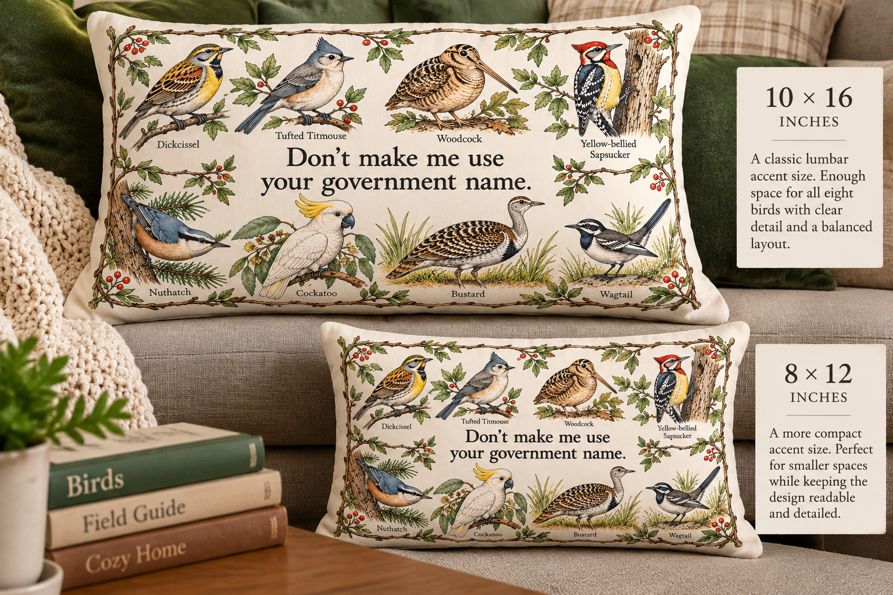
Ornithological wordplay adapted to decorative pillows.
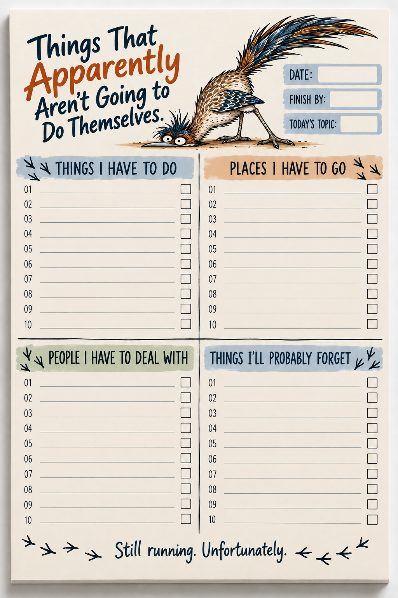
Four-section to-do pad with a roadrunner character.
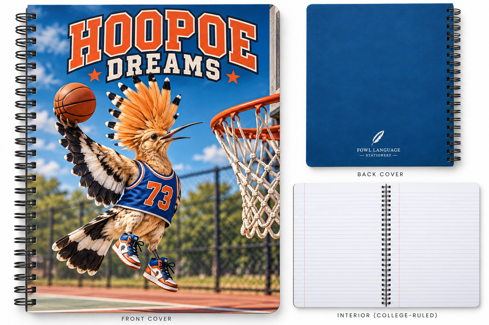
Basketball-themed school notebook.
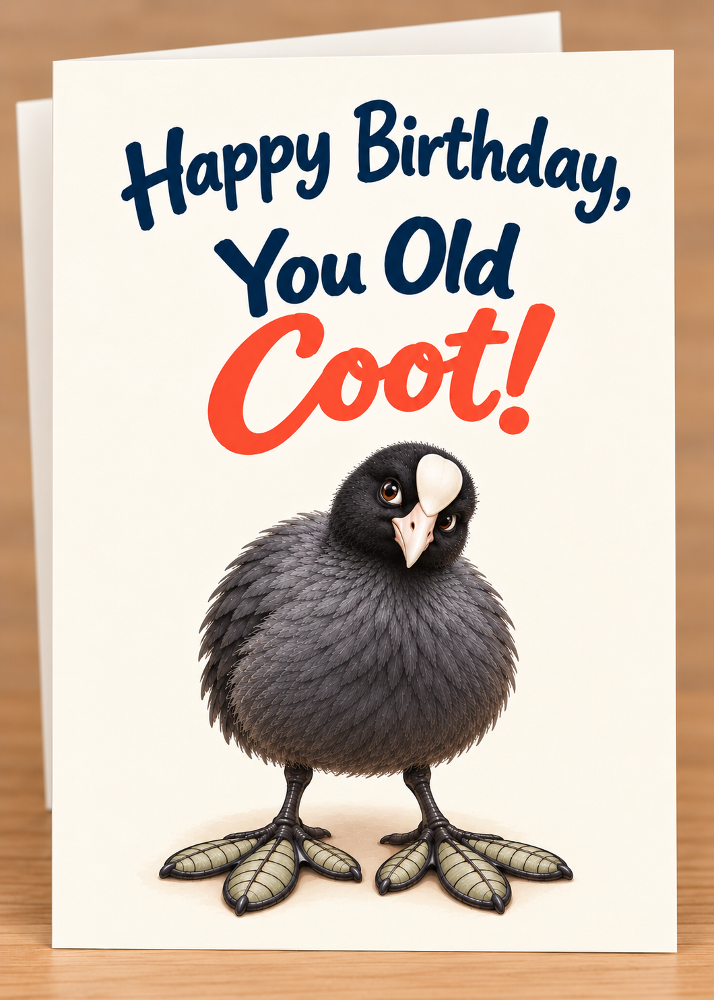
Character-driven birthday greeting card.
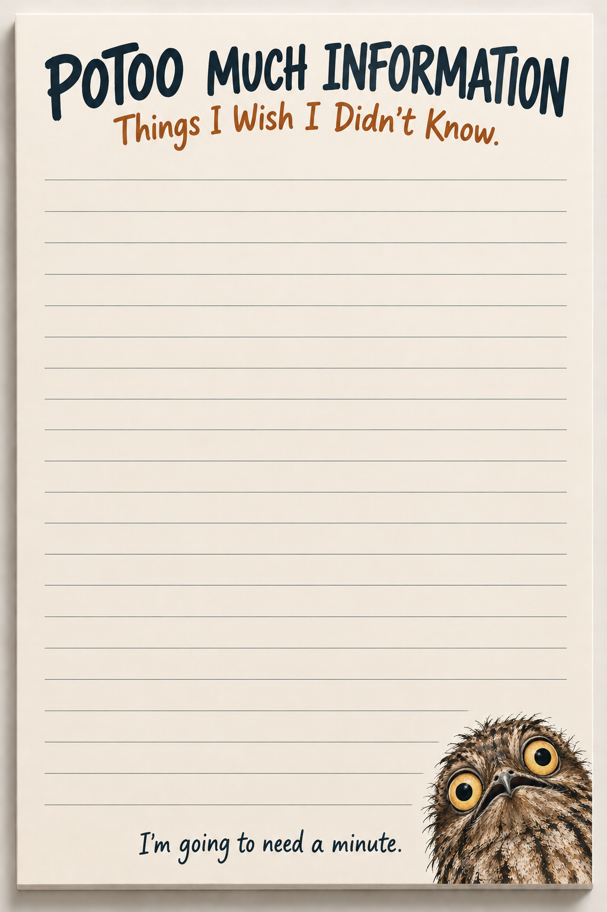
Humorous memo pad.
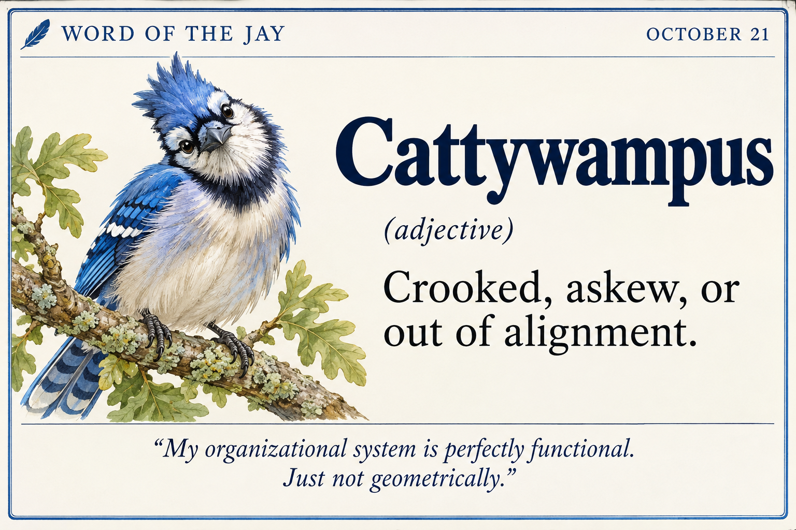
Blue-jay vocabulary/calendar sample.
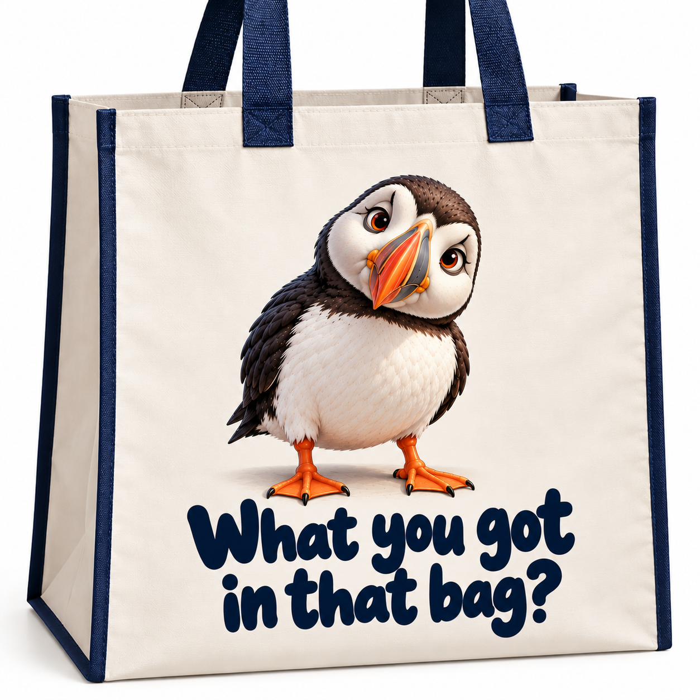
Music-inspired tote-bag concept.
What the work demonstrates
Brand and collection architecture; product-format selection; visual and verbal identity; audience-specific copy; concept-to-mockup development; functional specification; and iterative art direction.
All images are AI-assisted concept visuals. Fowl Language Stationery remains pre-launch; the concepts shown have not been represented as manufactured, sold, or market-validated products.
Range within a single brand
These examples highlight contrasting approaches: emotionally perceptive greeting-card copy, restrained premium stationery, work-life humor, a campaign-ready sustainability mascot, and a novelty field journal.
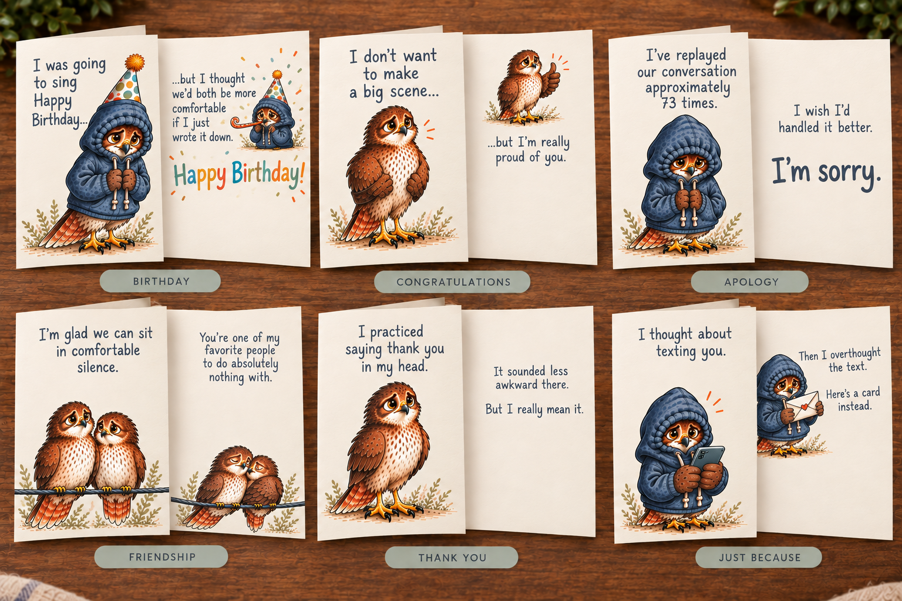
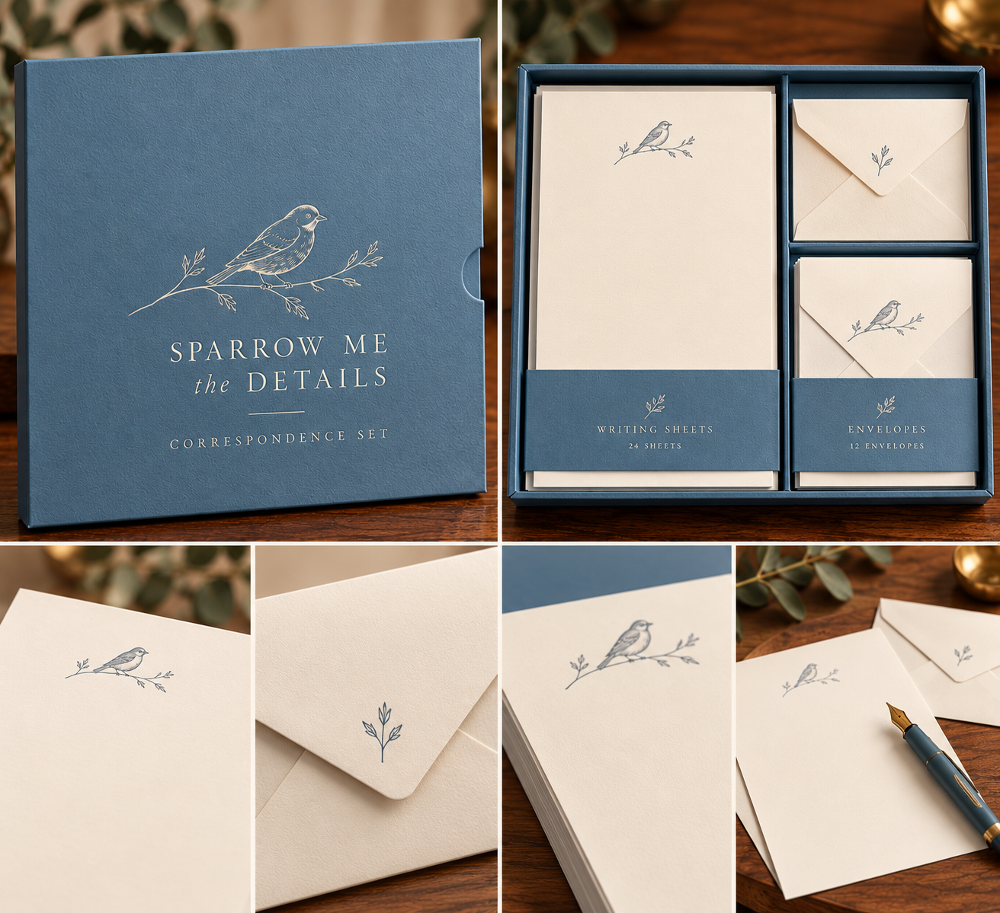
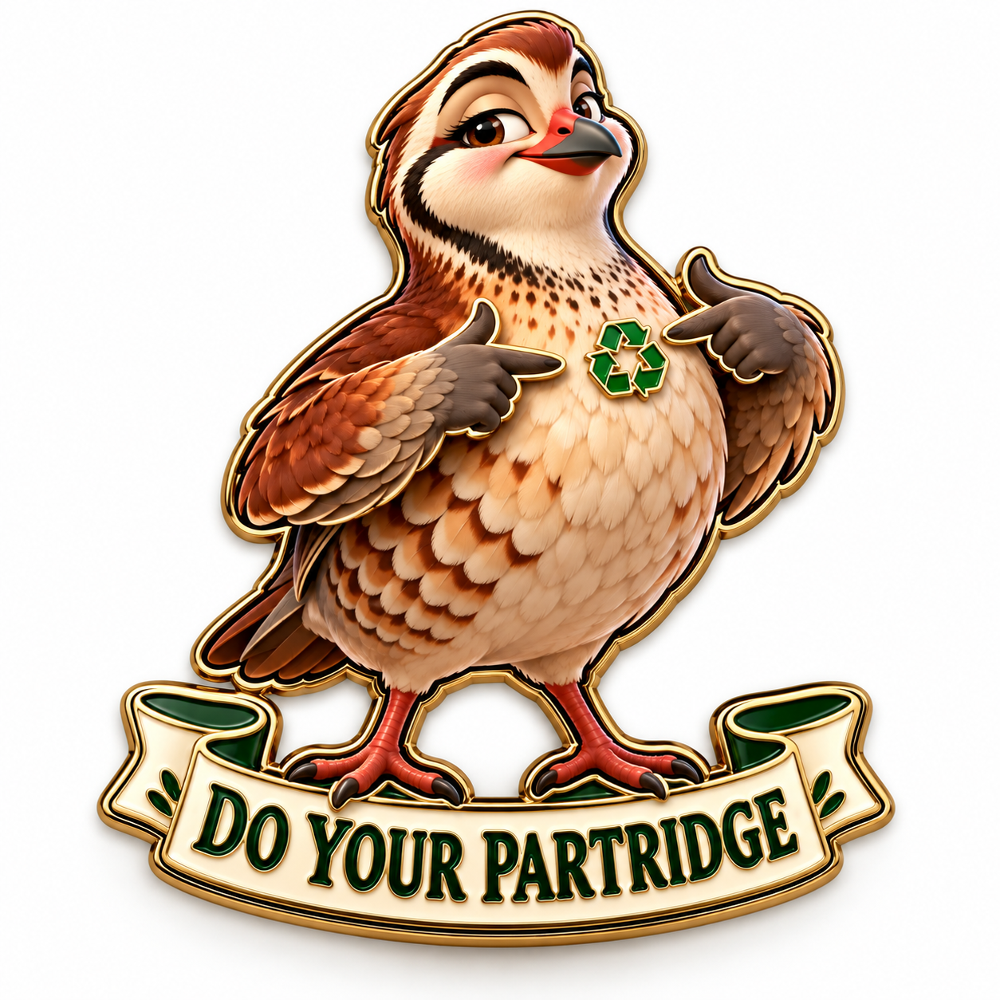
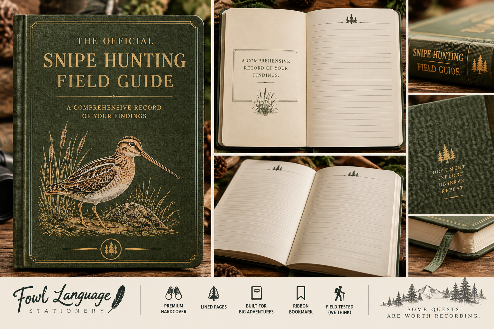
All are independently directed, AI-assisted visual product concepts; no manufacturing or sales are implied.